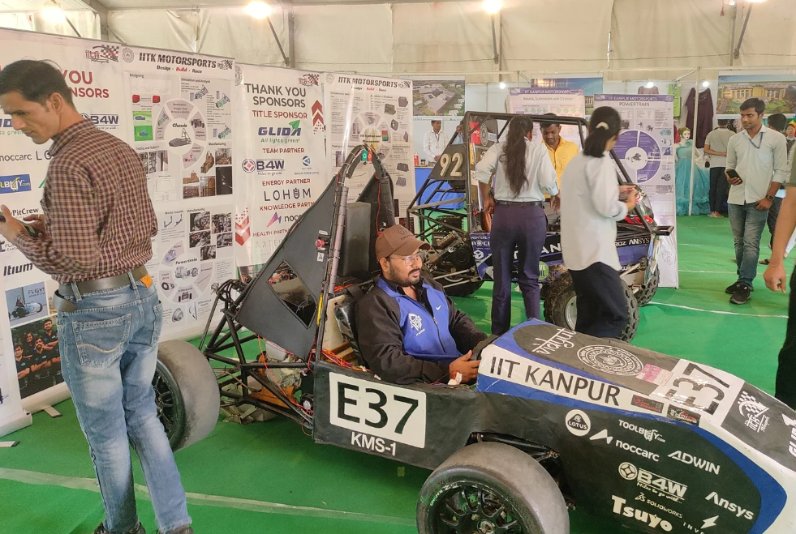
Techkriti
We proudly showcased our first Formula Student Electric Vehicle (FSEV) at Techkriti, the annual tech festival of IIT Kanpur, witnessing a footfall of over 60,000 attendees. The event provided a valuable platform to engage with a wide audience and highlight our engineering capabilities.
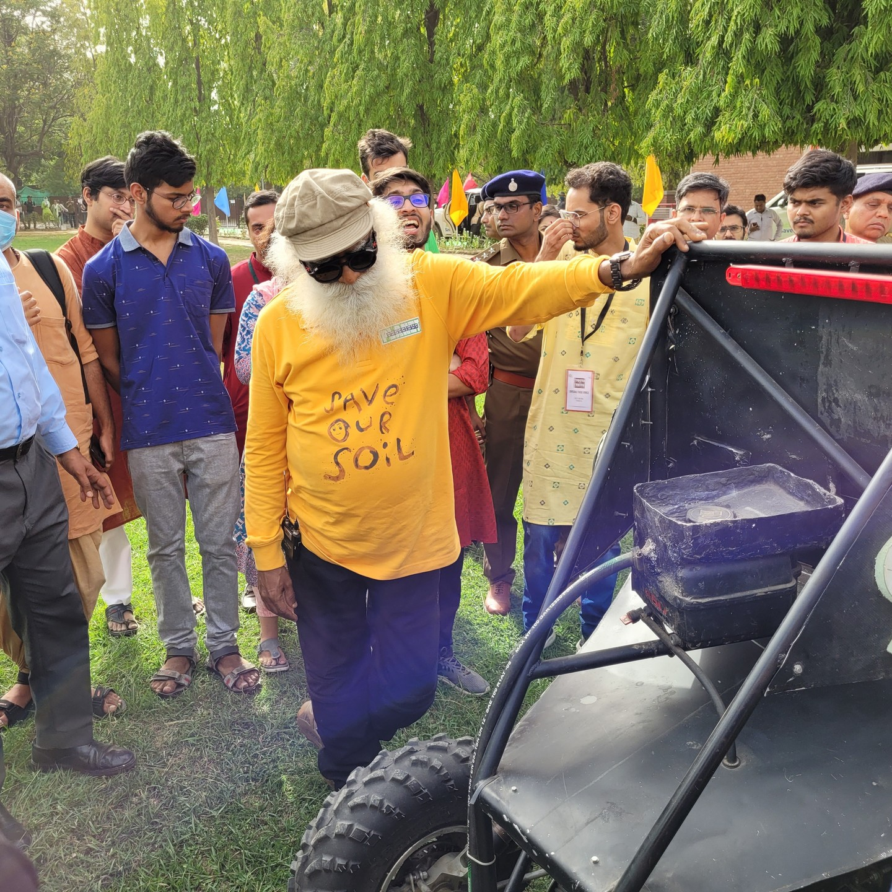
Interaction with Sadhguru
The team got an opportunity to interact and showcase their vehicle in front of Sadhguru, the mystic speaker and author on international forums, who also happens to be an automobile enthusiast. They showcased their latest ATV “BAJA’20”. He provided them with a lot of valuable insights, merging social ideas with their engineering mettle.
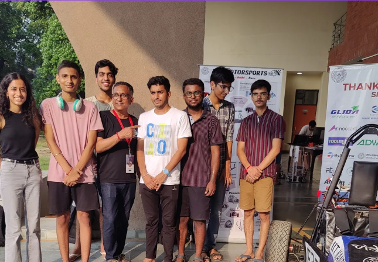
Showcase at Open Source Conference
We showcased our Formula Student car at the Open Source Conference held at IIT Kanpur, where we engaged with a diverse audience of tech enthusiasts and interacted with several distinguished speakers and contributors. The event served as a valuable platform to exchange ideas and present our innovations in electric vehicle technology.
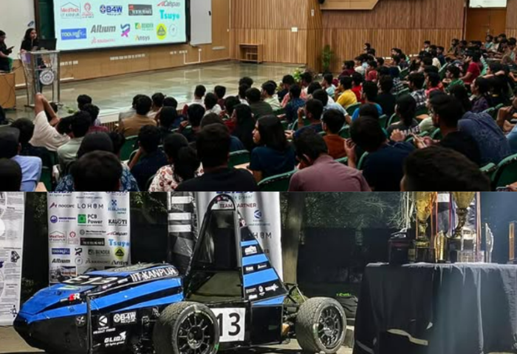
E13 Showcase
We proudly launched our second Formula Student Electric Vehicle, E13. The event witnessed an overwhelming response from the Y24 batch and was graced by Prof. Amarendra Edpuganti, who encouraged students to engage with the world of motorsports.

AME Event
IIITK Motorsports proudly showcased its FSEV at Research Scholar's Day, attended by Dr. Hanif Qureshi (CEO, NAB & Addl. Secretary, Ministry of Heavy Industry), who delivered the prestigious “Dr. R.S. Panday Lecture” on advancing sustainable mobility in India.
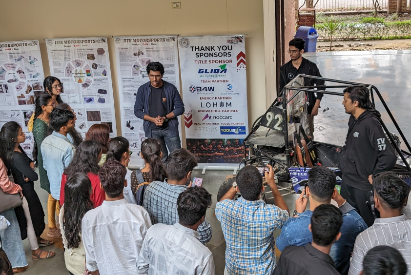
Yuva Sangam Phase IV
The team engaged with participants of Yuva Sangam Phase IV—an initiative by the Government of India to foster inter-state youth connections—during their visit to IIT Kanpur. Alongside Dr. A.R. Harish (Electrical Engineering), they discussed the team’s projects, legacy, and knowledge exchange.
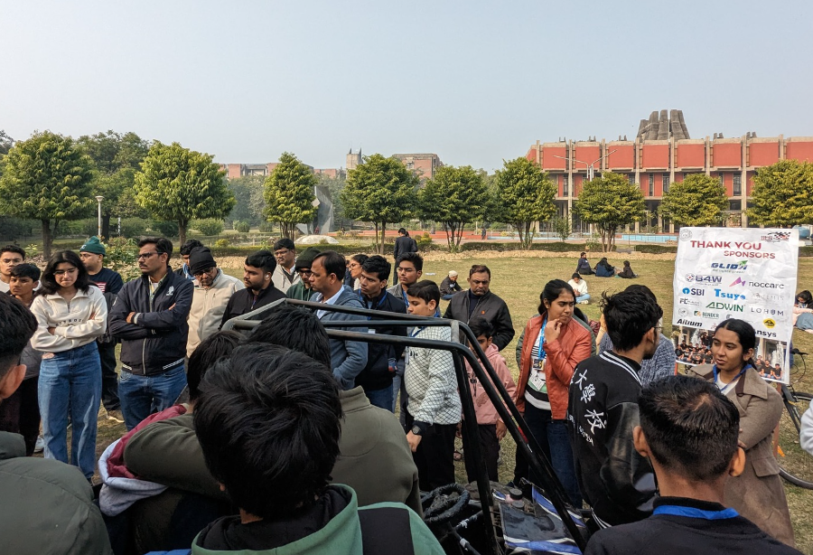
Techkriti Open School Championship
The team interacted with participants of Yuva Sangam Phase IV—an initiative by the Government of India to promote cultural exchange among youth from various States and UTs—during their visit to IIT Kanpur. In the presence of Dr. A.R. Harish (Department of Electrical Engineering), they shared insights on the team's engineering projects, milestones, and legacy.
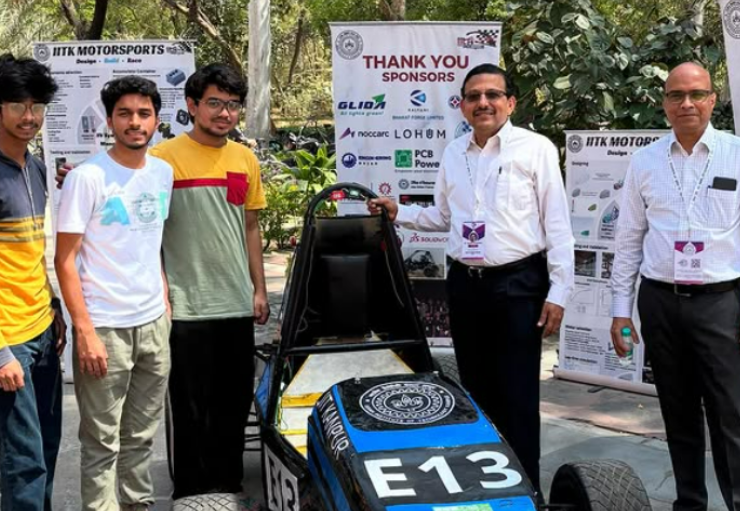
Industry Academia Symposium
We showcased our electric vehicle at the Industry Academia Symposium, interacting with leading experts including Dr. Aravind Bharadwaj (CTO, TuTr Hyperloop), Dr. Ashish Dutta, and professionals from Tata Steel, IIT Bombay, GE Aerospace India, and more. Their insights were truly inspiring.
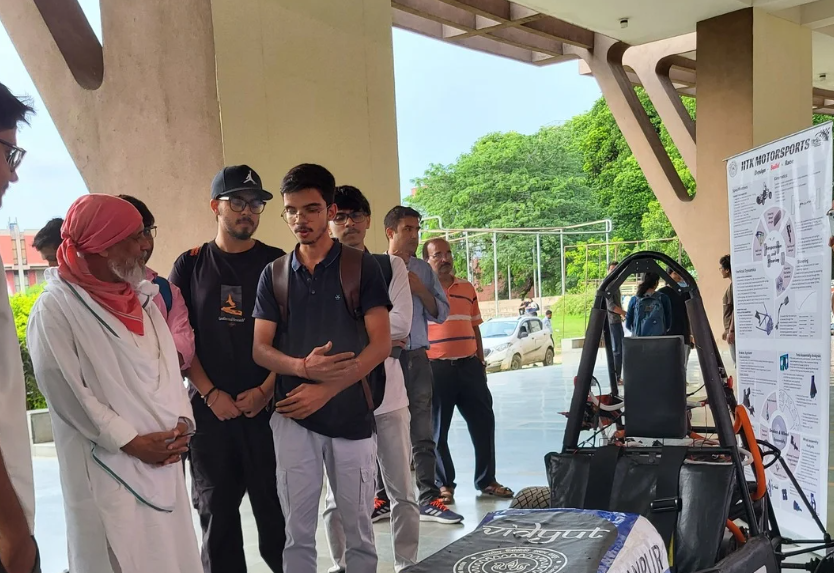
Dr. Anil Prakash Joshi
Our vehicle, Vidyut, was showcased during the inaugural lecture of the Kotak School of Sustainability, delivered by Padma Bhushan and Padma Shri awardee Dr. Anil Prakash Joshi—renowned environmentalist and founder of the Himalayan Environmental Studies and Conservation Organisation (HESCO).
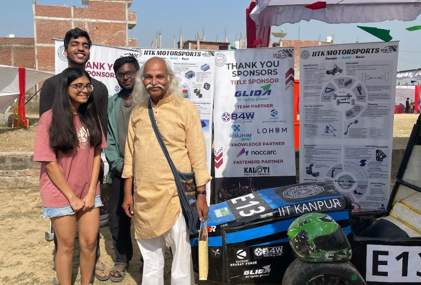
Interaction with HC Verma Sir
We had the privilege of meeting Prof. H.C. Verma at Shiksha Sopan, where we showcased our Formula Student car to a group of enthusiastic students. It was an inspiring interaction, and we were honored to share our work with one of India’s most respected educators, while encouraging young minds to pursue science and engineering.
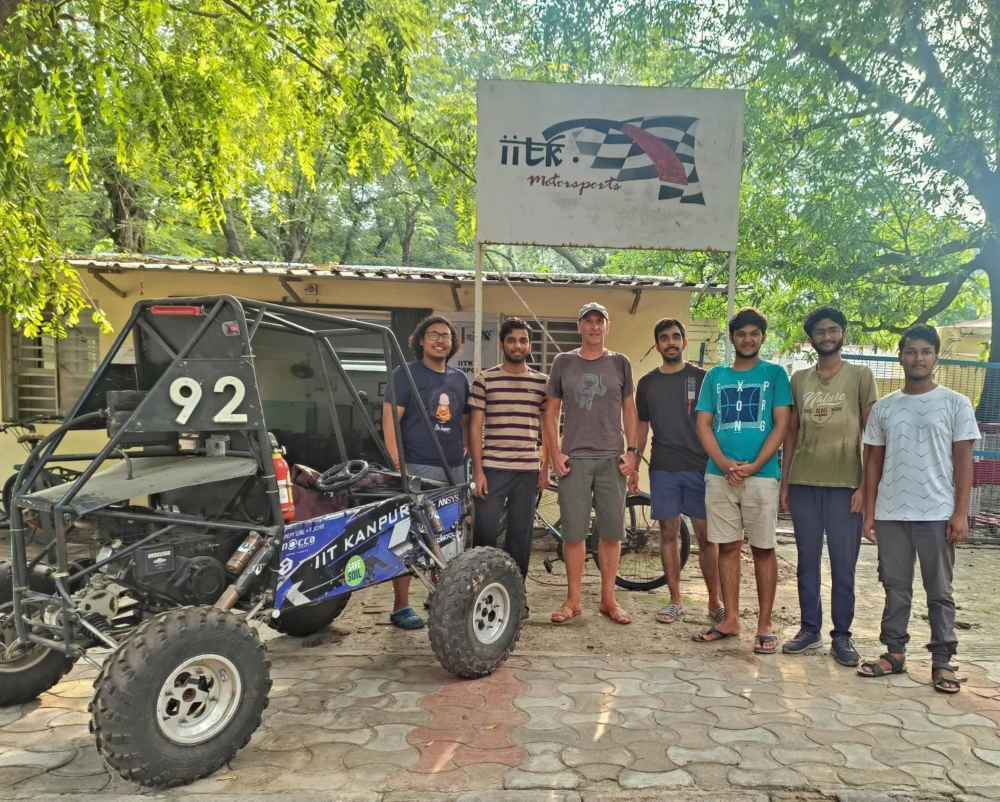
Toka Technologies CEO Meet
The team hosted Mr. Bruce Thompson, the visionary Founder and CEO of Toka Technologies and were delighted to listen to his insights and vision for the future of automotive technology. They had the privilege of showcasing their All-Terrain Vehicle to Mr. Thompson.
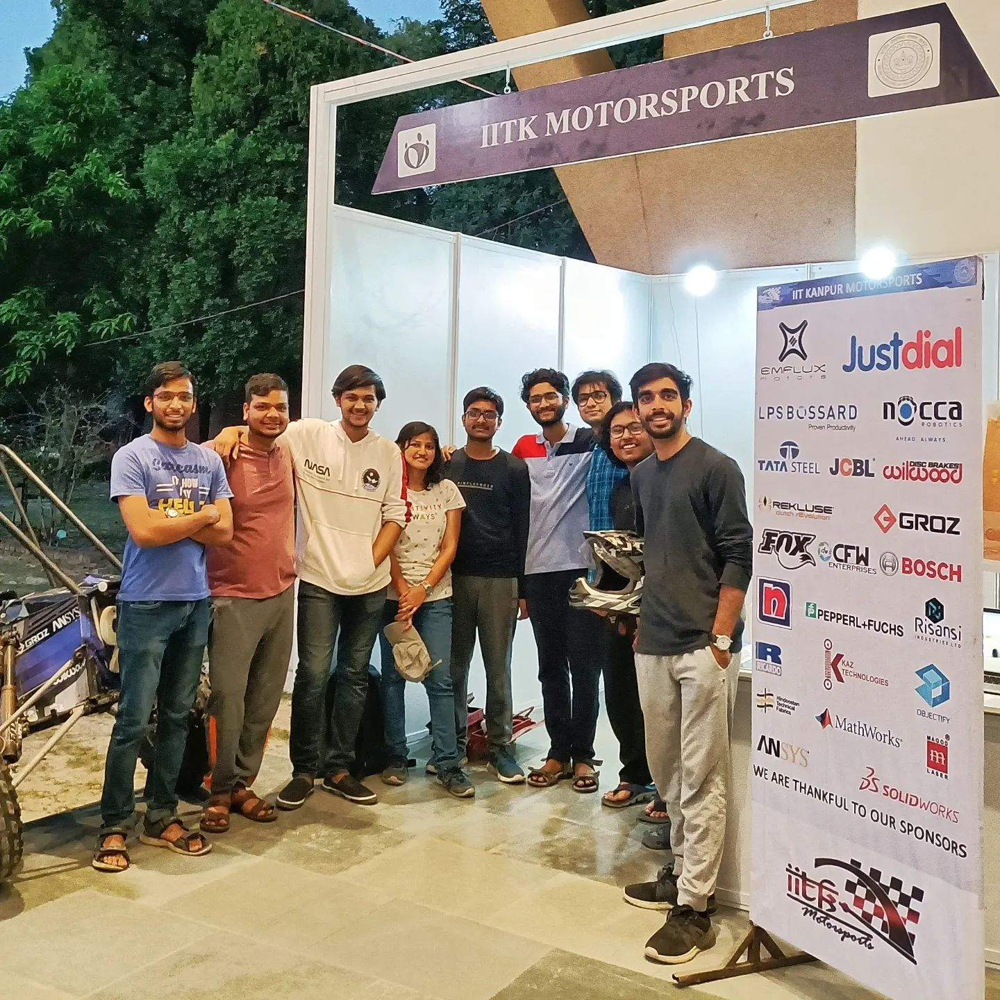
Samvardhan '23
Samvardhan ‘23 was the Career Festival of IIT Kanpur, organized by the Students’ Placement Office. The team got to interact with several startups and companies, expanding their network. Their vehicle was also showcased to multiple companies attending the event from different domains.
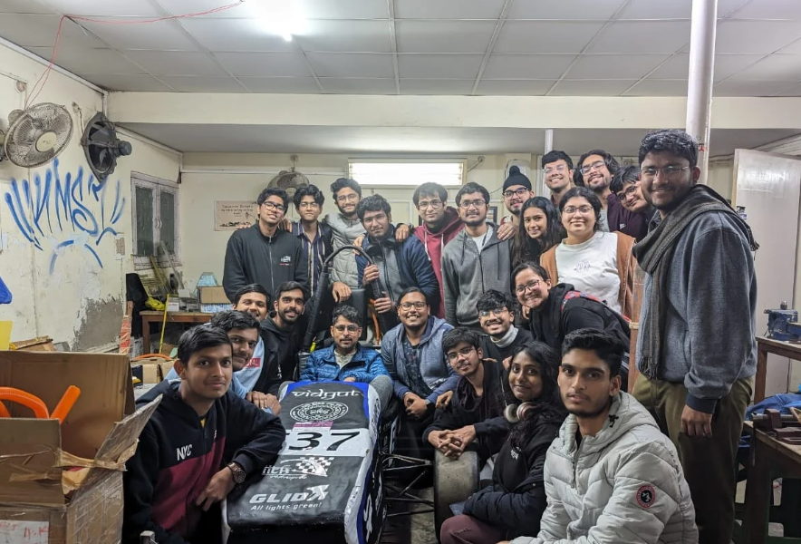
Varun Grover
We had the pleasure of hosting Varun Grover, acclaimed lyricist, stand-up comedian, and writer, at our workshop. It was an inspiring interaction as we showcased our Formula Student car and shared insights into our journey in engineering and innovation.
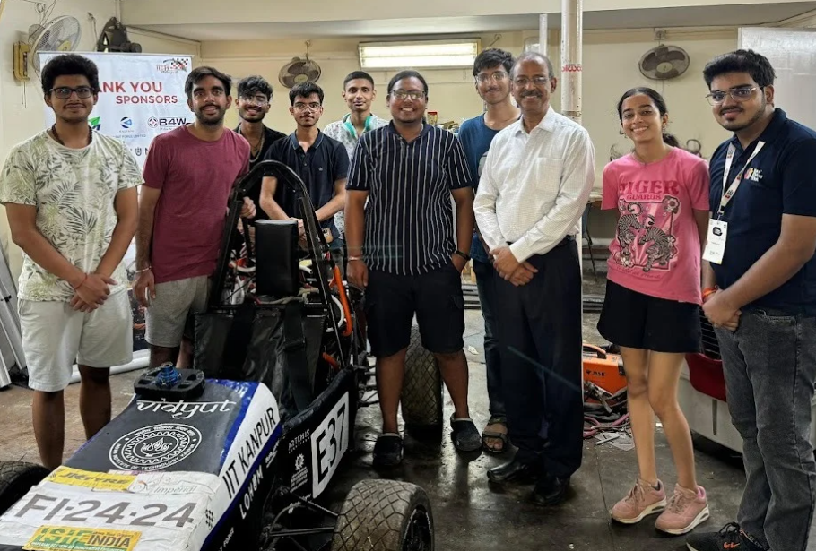
Shri Anil Swaroop
We were honored to welcome Dr. Anil Swaroop, former Coal Secretary and Education Secretary of India, to our workshop. Our team had the privilege of presenting our latest Formula Student car, sharing our passion for innovation, engineering, and motorsports.
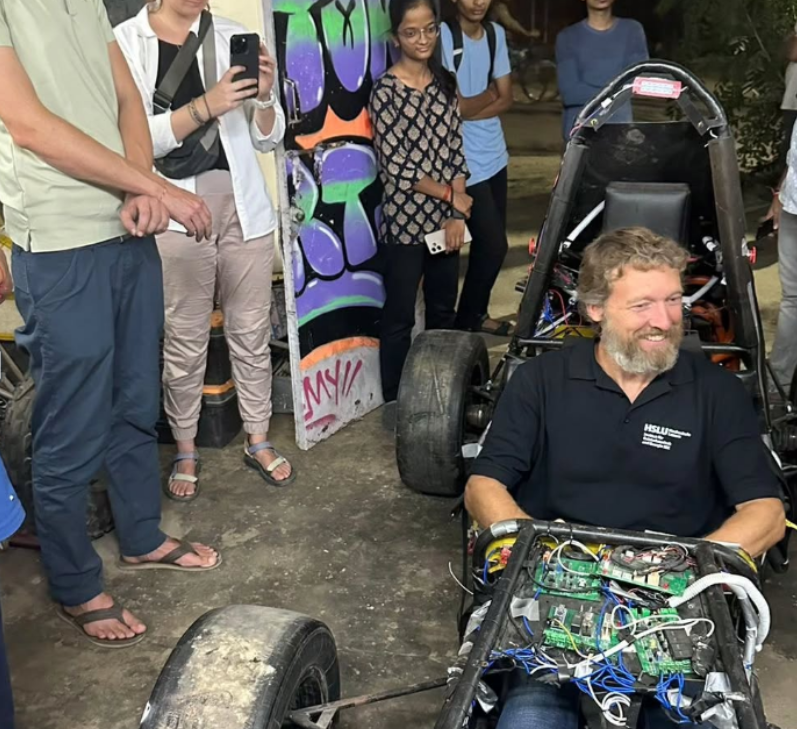
SOLARBUTTERFLY TEAM
We were delighted to host the SolarButterfly team – Roger Buser, Tobias Hieftscher, and Jessica Zenner – at our workshop. They were impressed by our ideas and enthusiasm, highlighting the value of collaboration in advancing sustainable mobility solutions.
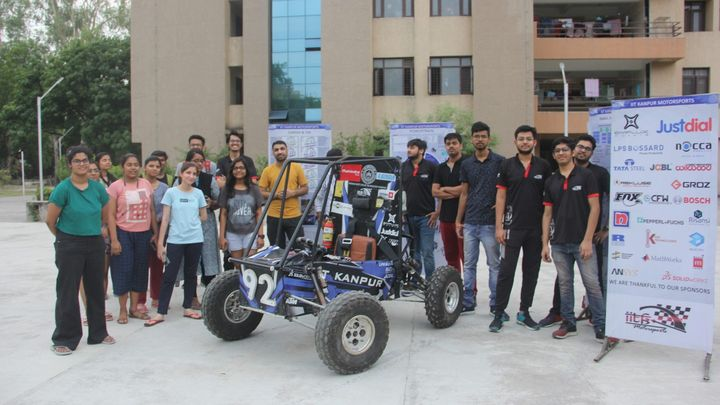
Lt. Col. Manoj Sinha
It was an honor to welcome Lt. Col. Manoj Sinha to the IITK Motorsports workshop. His inspiring leadership and insightful perspectives deeply resonated with the team, motivating us to strive for excellence and push the boundaries of innovation.
NEHA AGRAWAL (TEDX IITK)
We were honored to host Mr. Udit and Mrs. Anjali, esteemed IPS officers, at our workshop. It was a privilege to present our Formula Student car and engage in enriching discussions on innovation, engineering, and the vision driving IITK Motorsports. We had the pleasure of interacting with Ms. Neha Agrawal, renowned educator and creator of the YouTube channel Mathematically Inclined, during her visit to IIT Kanpur for a seminar in association with TEDx. We shared our journey in Formula Student, discussing innovation, learning, and the engineering spirit that drives our team.
MR. UDIT AND MRS. ANJALI (IPS)
We were honored to host Mr. Udit and Mrs. Anjali, esteemed IPS officers, at our workshop. It was a privilege to present our Formula Student car and engage in enriching discussions on innovation, engineering, and the vision driving IITK Motorsports. We had the pleasure of interacting with Ms. Neha Agrawal, renowned educator and creator of the YouTube channel Mathematically Inclined, during her visit to IIT Kanpur for a seminar in association with TEDx. We shared our journey in Formula Student, discussing innovation, learning, and the engineering spirit that drives our team.
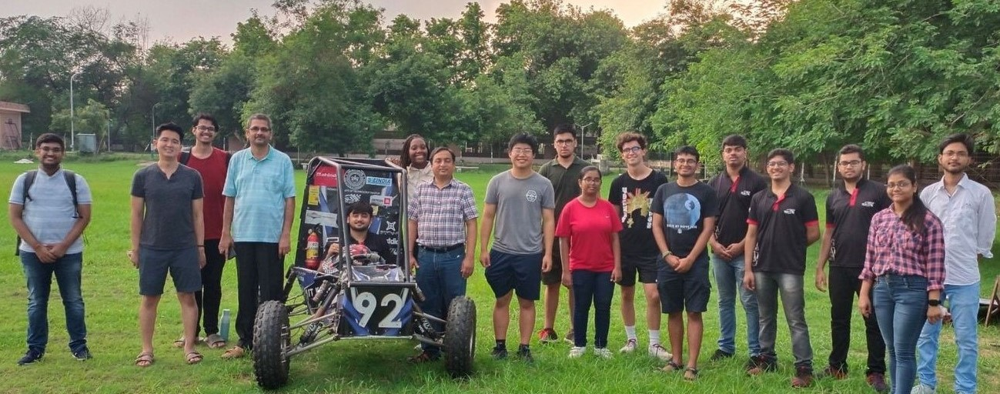
International Relations Engagement
The team interacted with a delegation from premium US universities led by Prof. Nikhil Gupta from NYU Tandon School of Engineering, hosted by IIT Kanpur and shared their experience as motorsports enthusiasts. This was a collaborative event of the team with the Academics and Career Council and the Science and Technology Council, IIT Kanpur.
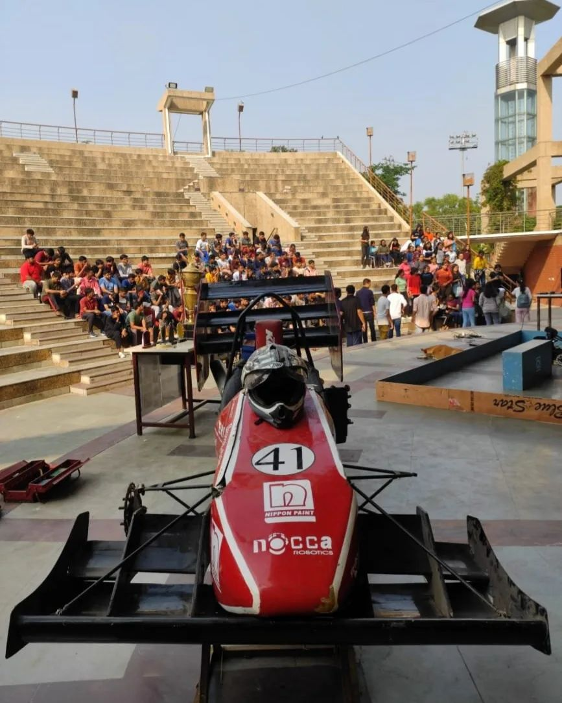
SnT Pavilion '22
The SnT Pavilion is an annual tech showcase event for the incoming batch at IIT Kanpur. It attracted over 1000 students, who interacted with the team about what it does, and the enthusiasm behind motorsports in general. The BAJA-19 showcase generated an overwhelming response from the freshers junta.
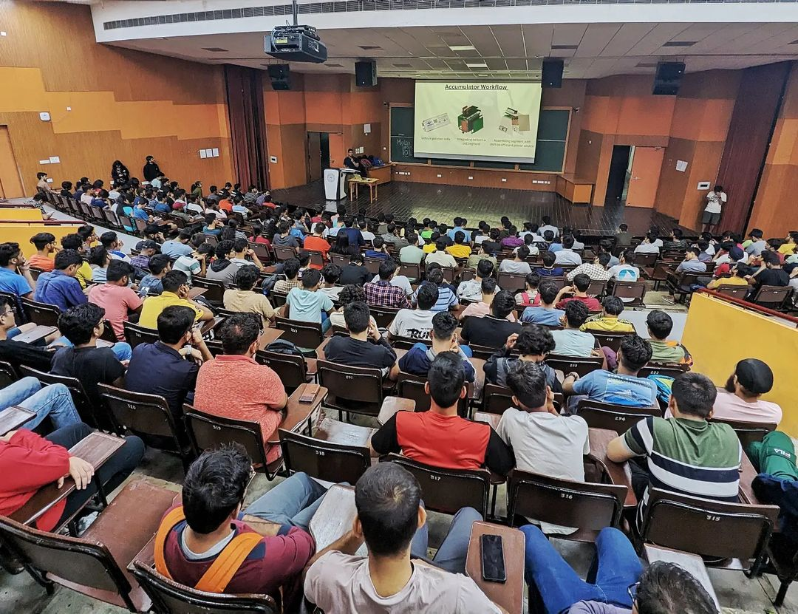
Team '22 Introductory session
The Introductory Session ‘22 was an event which provided the fresher batch with a detailed insight into the workings of the team, its individual subsystems and the basic technical knowledge associated with them. The event saw an overwhelming response with more than 400 students attending the session, and over 150 students appearing for the recruitment test.
Fresher Showcase Y21
The team introduced their vehicle, BAJA-19, to the incoming fresher batch. With over 250 students attending the session, they discussed not only the technical specifications of the car, but also delved into the team's values and culture. They also discussed why the freshers should consider becoming a part of our team and provided insights into the recruitment process for joining.
7th IEEE PES Day
We collaborated with the IEEE IIT Kanpur chapter for the 7th IEEE PES Day, themed “Empowering Electric Mobility Innovation.” Our team presented a talk on “EV Racing Car Design” followed by a live demo of our FSEV Vidyut. Prof. Gururaj Mirle Vishwanath (EE) also graced the event, contributing to its success.
SNT Pavilion FOR Y24S
We hosted the Freshers’ Pavilion, where over 1200+ students engaged with our projects and explored sponsor displays. The event witnessed enthusiastic participation, as newcomers interacted with our team and exhibits in a vibrant and dynamic environment.
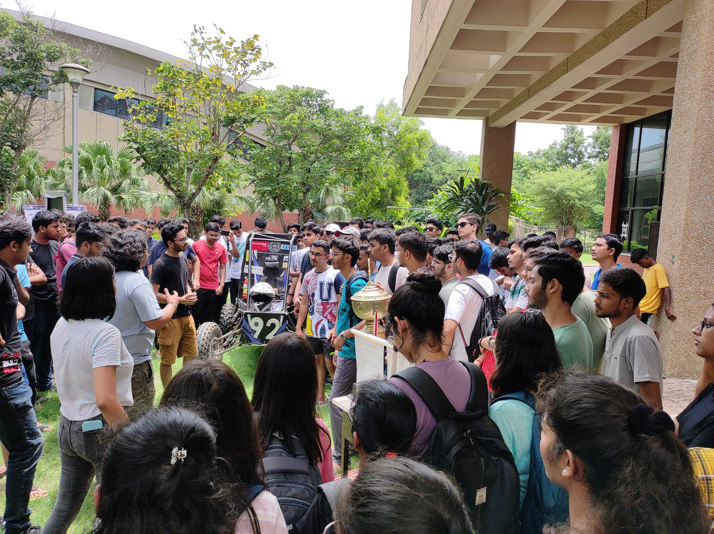
SnT Pavilion '23
The SnT Pavilion introduced the incoming batch of Y23 at IIT Kanpur to the team, their previous achievements and upcoming projects. They also showcased their vehicle, BAJA-19 to over 1000 enthusiastic students, talking about the vehicle’s technical specs, the team, its functioning and the legacy.
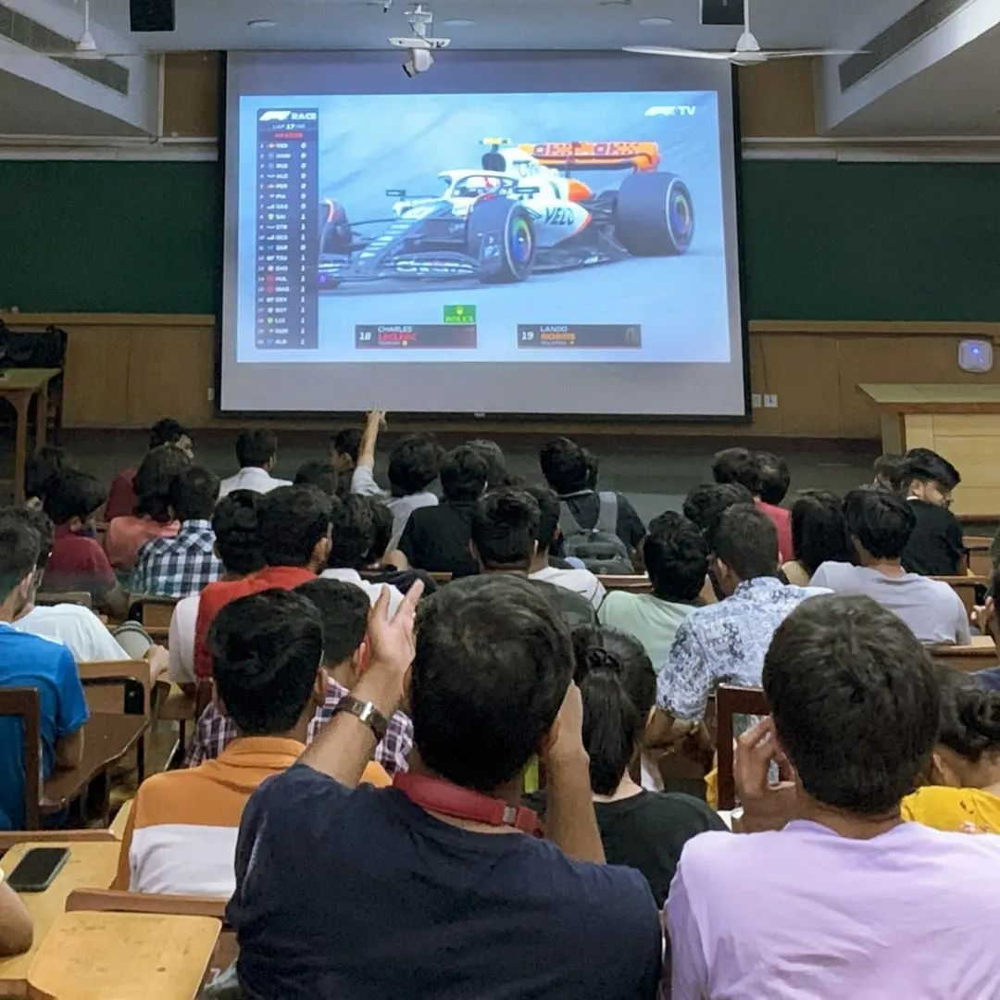
F1 Grand Prix Screening
The team in collaboration with Udghosh screened the Spanish Grand Prix ’23 sponsored by RedBull India for the campus junta. The event drew a crowd with over 300 viewers, eager to witness the intense race action. The screening not only showcased the team's dedication to motorsport but also their dedication towards building a community of like-minded individuals who share a passion for speed, technology, and engineering excellence.